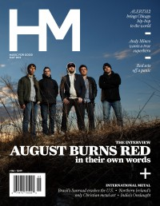

CMnexus
:
Contemporary Christian culture, music, and media.
Magazines
Profiles
Dove Awards
cmnexus.org
CM
nexus
→
Profiles
→
S
→
David Stagg
David Stagg
Writing Credits: 3 of 5
< -- Previous
Next -- >
1
2
3
4
5
Writing credits listing
Jan 2010 in
HM
#141
Living Sacrifice
-
The Infinite Order
Gwen Stacy
-
A Dialogue
May 2010 in
HM
#143
Demon Hunter
-
The World is a Thorn
Jul 2010 in
HM
#144
As I Lay Dying
-
The Powerless Rise
Nov 2010 in
HM
#146
August Burns Red
-
Home
Jul 2011 in
HM
#149
August Burns Red
-
Leveler
Dec 2011 in
HM
#151
In The Midst of Lions
-
Shadows
Feb 2012 in
HM
#153
For Today
-
Ekklesia
Apr 2012 in
HM
#155
The Tug Fork River Band
-
Vultures
May 2012 in
HM
#156
For Today
-
Immortal
The Great Commission
-
Fireworks [EP]
Jul 2012 in
HM
#157
The Rocket Summer
-
Life Will Write The Words
The Welcome Wagon
-
Precious Remedies Against Satan's Devices
xLooking Forwardx
-
Down With the Ship EP
Altars
-
Conclusions
End of September
-
End of September
Day of Vengeance
-
Star Breather
Aug 2012 in
HM
#158
Loud Harp
-
Loud Harp
Sep 2012 in
HM
#159
As I Lay Dying
-
Awakened
The Chariot
-
One Wing
Oct 2012 in
HM
#160
Becoming the Archetype
-
I Am
Texas In July
-
Texas In July
It Lies Within
-
Chrysalis
Showbread
-
Cancer
All Kings All Poets
-
What We've Become
Nov 2012 in
HM
#161
Machina
-
To Live and Die in the Garden of Eden
Inhale Exhale
-
Movement
Jan 2013 in
HM
#162
August Burns Red
Young Oceans
-
Advent
Mar 2013 in
HM
#164
Phinehas
-
The Bridge Between
Hope for the Dying
-
Aletheia
I Am Empire
-
Anchors
Apr 2013 in
HM
#165
Valaska
-
Natural Habitat

May 2013 in
HM
#166
"August Burns Red is set to Release their Album, and it will Reinvent their Genre."
August Burns Red
"Adelaine Pours it On"
Adelaine
"Red Has the Best Seat in the House"
Red
Paramore
-
Paramore
David Thulin
-
Reconstruction
Foreverlin
-
Long Lost
Hillsong United
-
Zion
This City Awaits
-
Said the Liar
Jun 2013 in
HM
#167
"Technically Screaming"
Killswitch Engage
In Brief:
Silverline
"For the Love of the Game"
We As Human
"It's Never Going to Work: Colton Dixon's 'IDOL' Afterlife"
Colton Dixon
The Captain Hates the Sea
-
As You Will
For The Broken
-
Aurora
Bruised But Not Broken
-
Just(defied)
Jul 2013 in
HM
#168
Animal Giant
-
The Glory EP
The Burial
-
In the Taking of Flesh
Writing Credits: 3 of 5
< -- Previous
Next -- >
1
2
3
4
5
CMnexus
(noun)
The magazine index
of modern music
and Christianity
© 2011 CMnexus. Last updated May 2025.
Contact:
Rants and other correspondence to:
editor -AT- cmnexus
-DØT- org
About